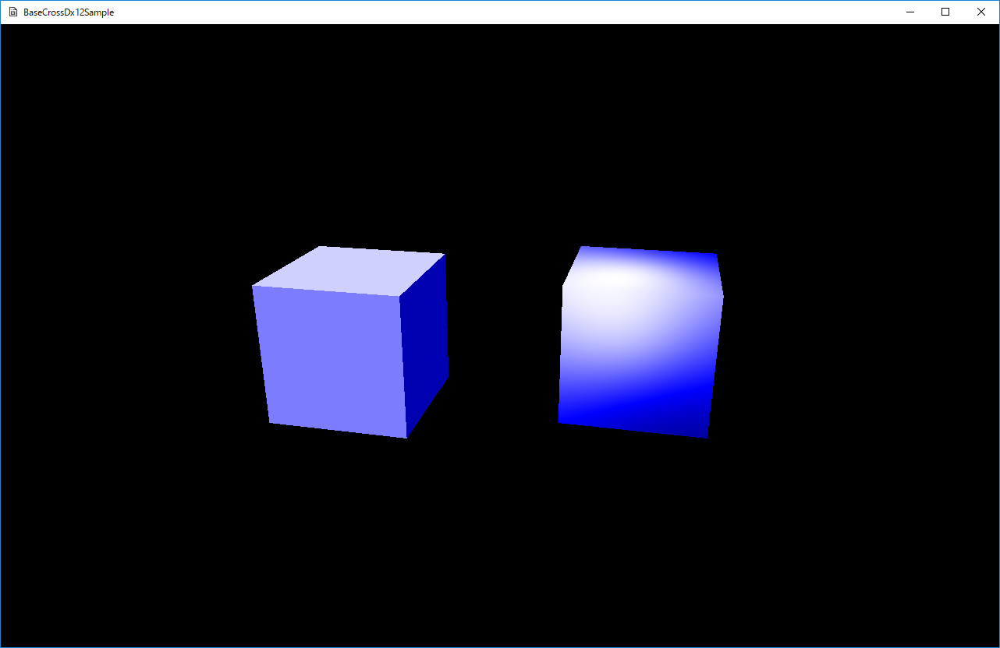

図0010a
void CubeObject::CreateBuffers() {
float HelfSize = 0.5f;
vector<Vector3> PosVec = {
{ Vector3(-HelfSize, HelfSize, -HelfSize) },
{ Vector3(HelfSize, HelfSize, -HelfSize) },
{ Vector3(-HelfSize, -HelfSize, -HelfSize) },
{ Vector3(HelfSize, -HelfSize, -HelfSize) },
{ Vector3(HelfSize, HelfSize, HelfSize) },
{ Vector3(-HelfSize, HelfSize, HelfSize) },
{ Vector3(HelfSize, -HelfSize, HelfSize) },
{ Vector3(-HelfSize, -HelfSize, HelfSize) },
};
vector<UINT> PosIndeces = {
0, 1, 2, 3,
1, 4, 3, 6,
4, 5, 6, 7,
5, 0, 7, 2,
5, 4, 0, 1,
2, 3, 7, 6,
};
vector<Vector3> FaceNormalVec = {
{ Vector3(0, 0, -1.0f) },
{ Vector3(1.0f, 0, 0) },
{ Vector3(0, 0, 1.0f) },
{ Vector3(-1.0f, 0, 0) },
{ Vector3(0, 1.0f, 0) },
{ Vector3(0, -1.0f, 0) }
};
vector<VertexPositionNormal> vertices;
vector<uint16_t> indices;
UINT BasePosCount = 0;
for (int i = 0; i < 6; i++) {
for (int j = 0; j < 4; j++) {
VertexPositionNormal Data;
Data.position = PosVec[PosIndeces[BasePosCount + j]];
if (m_Flat) {
//フラット表示の場合は法線は頂点方向にする
Data.normal = Data.position;
Data.normal.Normalize();
}
else {
//フラット表示しない場合は、法線は面の向き
Data.normal = FaceNormalVec[i];
}
vertices.push_back(Data);
}
indices.push_back((uint16_t)BasePosCount + 0);
indices.push_back((uint16_t)BasePosCount + 1);
indices.push_back((uint16_t)BasePosCount + 2);
indices.push_back((uint16_t)BasePosCount + 1);
indices.push_back((uint16_t)BasePosCount + 3);
indices.push_back((uint16_t)BasePosCount + 2);
BasePosCount += 4;
}
//メッシュの作成（変更できない）
m_CubeMesh = MeshResource::CreateMeshResource(vertices, indices, false);
}